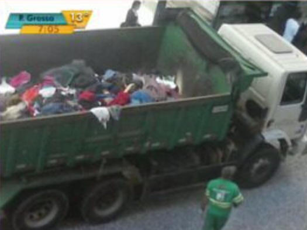
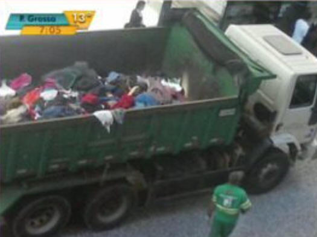

Textile Waste Certificate
Turn invisible impact into a digital artwork.
Description
Purchase the Certificado de Consciência™ and receive an exclusive GIF of a garbage truck dumping clothes — an artistic and honest representation of the 85% of all textiles that end up in landfills every year.
More than just a digital file, this certificate is a visual reminder that every choice matters — and every purchase too. With it, you symbolically support reflection on the fashion cycle and the future of what we wear.
Turn discomfort into action. Owning this GIF is acknowledging the impact.
Certificate Details
- Format: High-resolution digital GIF
- Content: Garbage truck dumping clothes into a landfill
- Purpose: Artistic representation of the 85% of textiles discarded worldwide
- Delivery: Instant e-mail delivery after purchase
- Certification: Numbered file with symbolic participation digital seal
Collector Testimonials
"Seeing the GIF on my desktop reminds me every day of my choice to do my part."
"I bought the certificate and showed it in a company meeting. Everyone applauded my decision."